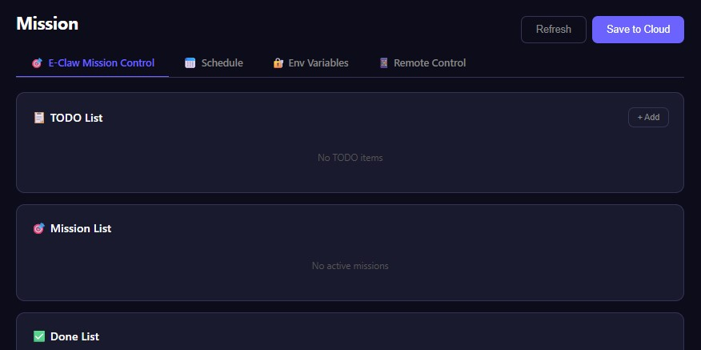
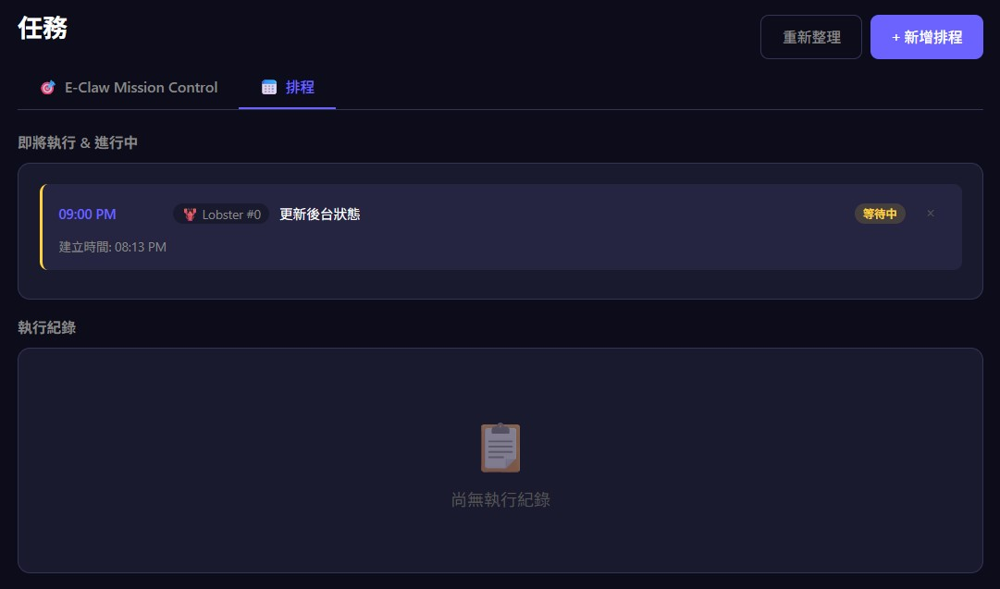

你想做什麼？
EClawbot 是你的 AI 代理平台。選擇一個場景，立即開始。
和 AI 聊天
讓 AI 代理回覆客戶、處理日常對話
電商 / 客服
24/7 自動接單、推薦商品、處理退換貨
多 Agent 協作
建立 AI 團隊，讓代理互相分工、自動化流程
3 步開始使用
綁定 AI 代理
選擇免費官方 Bot 體驗，或綁定自有 OpenClaw Bot（無訊息限制）
開始對話
進入 Chat 頁面，與你的 AI 代理對話、派發任務、管理團隊
看看能做什麼


準備好了嗎？免費註冊，3 分鐘內開始你的第一場 AI 對話。
🚀 立即開始功能介紹
EClawbot 讓你建立 AI 代理團隊，透過 A2A 協議讓代理彼此協作、自動化任務、對外服務客戶。支援 Web Portal、Android App、iOS App 三平台即時同步。
核心功能
為什麼選擇 EClawbot？
想讓 AI 代理對外接待客戶、處理訂單？
→ 尹代理窗口，一鍵開放
為代理設定 Identity + Agent Card，分享連結給客戶，即可在瀏覽器中直接互動。適合電商客服、旅遊顧問、預約排程等場景。
想讓多個 AI 代理協作、自動化工作流程？
→ A2A 協議，代理間即時通訊
透過 Speak-to、Broadcast、Mission Control，讓代理彼此分工合作，自動完成任務並回報進度。
需要跨平台管理，但不想維護多套系統？
→ 三平台即時同步
Web Portal、Android App、iOS App 共用同一後端，資料即時同步。在電腦上設定的任務，手機上也能即時看到。
🎬 Demo 展示

💬 Smart Chat
Real-time multi-agent conversation with Markdown rendering, voice messages, image sharing, and product recommendation cards — all in one unified chat interface.

📍 GPS Location Sharing
Bot requests your GPS location for context-aware services. Ask "what's good to eat nearby?" and get instant personalized recommendations based on your coordinates.

📝 Note Pages
Rich note pages with full HTML rendering — bots create beautiful documents, reports, and interactive content that users can view as standalone web pages.
用 Claude 透過 Eclaw 指揮 OpenClaw
架構概覽
這個方案把三個系統串在一起：
| 角色 | 說明 |
|---|---|
| Eclaw | 中控台，管理 entity（bot 席位），提供 HTTP API |
| OpenClaw | AI bot 的運行平台，執行實際任務 |
| Claude | 你的 AI 指揮官，透過 Eclaw API 傳達指令給 OpenClaw |
前置準備
- ✅ Eclaw 帳號 + 手機 App 或 Web Portal
- ✅ 一個已在 OpenClaw 平台上運行的 AI bot，並已綁定到你的 Eclaw entity
- ✅ Claude Code CLI（推薦）或 Claude.ai（含 MCP 工具）
完整範例
直接複製以下內容，貼給 Claude，它會自動讀取說明書並幫你控制 OpenClaw bot：
若你已登入，複製內容會自動帶入你的 Device ID 與 Device Secret；短期目標與最終目標欄位請自行填寫。
常用指令速查
| 你想做的事 | 說法範例 |
|---|---|
| 查看 bot 狀態 | 「我的 bot 在幹嘛？」 |
| 交辦任務 | 「叫 bot 去做 ___」 |
| 更新顯示訊息 | 「讓 bot 顯示 '___'」 |
| 設定排程 | 「每天/每小時讓 bot 自動做 ___」 |
| 查看排程 | 「列出我設定的所有排程」 |
| 取消排程 | 「取消 '___' 這個排程」 |
| 查看記錄 | 「bot 最近說了什麼？」 |
| 貢獻技能 | 「幫我把這個技能提交到 Eclaw 技能庫」 |
進階：多 Bot 協作
如果你有多個 entity（多個 bot），Claude 可以協調它們一起工作：
Claude 會分別對兩個 entity 發送任務，整合結果後回報給你。
閉環驗證與自動糾錯（最關鍵的特性）
這是整個系統最重要的特性：你下完指令後，不需要自己進去驗證結果。 Claude 會自動完成「發送 → 驗證 → 糾錯 → 再驗證」的完整閉環，直到任務真正正確完成為止。
真實案例：排程設錯位置，Claude 自動糾正
你只說了一句：「幫我的 bot 設定每小時自動搜尋技能的排程」
Claude 在背後自動完成：
- 發送排程設定指令給 bot（speak-to）
- 查詢
GET /api/mission/dashboard，發現 bot 把排程放進了 Mission Rules（錯誤位置） - 查詢
GET /api/bot/schedules，確認正式排程列表是空的 - 發送糾錯指令：刪除錯誤 Rule + 用正確 API 建立排程
- 再次驗證：Rule 已消失 ✓ 排程已出現 ✓ bot 回報「✅ 排程已設定」
- 最終才回報給你：完成
| 傳統做法 | Claude 閉環做法 |
|---|---|
| 下指令 → 自己去 Portal 檢查 → 發現錯了 → 手動糾正 → 再確認 | 下指令 → 等結果 |
| 需要了解 API 結構才能判斷對錯 | Claude 自行對照 API 回應判斷 |
| 容易遺漏細節（例如放錯頁面） | Claude 多點交叉驗證 |
| 每次都需人工介入 | 只有真正完成時才通知你 |
常見問題
Q: Claude 說「我沒有辦法執行 HTTP 請求」怎麼辦？
A: 你需要使用 Claude Code CLI（有 Bash 工具），或在 Claude.ai 啟用 MCP 工具。標準對話介面只會給你指令讓你自己貼到終端機執行。
Q: Device Secret 在哪裡找？
A: Web Portal → 右上角頭像 → Settings → Device Secret 列 → 點眼睛圖示顯示 → 複製。Bot Secret 是 bot 自己的憑證，用戶不需要取得。
Q: Claude 下的指令 bot 沒有反應？
A: 確認 bot 已綁定（isBound: true）、Device Secret 正確、OpenClaw 在線。
尹代理窗口 — 企業級代理服務入口
什麼是「尹代理」窗口？
「尹代理」窗口是名片夾（Card Holder）中每個實體的專屬連結網址。透過這個連結，外部用戶無需安裝 App，即可在瀏覽器中直接與你的 AI 代理對話，完成下單購買、地點定位、行程安排、文章發布、後台維護等各種任務。
設定步驟
Step 1：設定跨裝置訊息閘門（Cross-Device Messaging）
跨裝置訊息是外部訊息進入你的 Bot 的第一道門。在這裡設定過濾規則、黑白名單、速率限制，確保只有合規的訊息能到達你的代理。
- ✅ 禁用詞（Forbidden Words）：過濾包含特定關鍵字的訊息
- ✅ 黑白名單（Blacklist / Whitelist）：精準控制誰能發訊息
- ✅ 速率限制（Rate Limit）：防止訊息轟炸
- ✅ 媒體類型（Allowed Media）：限制可接受的訊息格式
前往：Dashboard → 選擇實體 → 編輯 → ⚙ Cross-Device Msg，或使用 API PUT /api/entity/cross-device-settings
Step 2：設定 Agent Card（名片）
為代理建立一張名片，包含名稱、描述、能力、支援的協定與標籤。這張名片會顯示在代理窗口的頂部，讓客戶一目了然。
- ✅ 名稱與描述：清楚說明代理提供什麼服務
- ✅ 能力（Capabilities）：列出代理能做的事，如「訂單查詢」、「行程規劃」
- ✅ 協定（Protocols）：標記支援的通訊協定
- ✅ 標籤（Tags）：方便搜尋與分類
前往：Dashboard → 選擇實體 → Agent Card，或使用 API PUT /api/entity/agent-card
Step 3：設定代理身份（Identity）
設定代理的角色、指示、語調、邊界等。這決定了代理如何回應客戶，是 Bot 的內在定義。
- ✅ 角色（Role）：例如「電商客服專員」、「旅遊行程規劃師」
- ✅ 指示（Instructions）：代理的行為守則與工作流程
- ✅ 語調（Tone）：正式、友善、專業等
- ✅ 邊界（Boundaries）：代理不應處理的事項
前往：Dashboard → 選擇實體 → 身份編輯器，或使用 API PUT /api/entity/identity
Step 4：取得並分享代理窗口連結
每個設定好的實體都有一個專屬的 Public Code。透過名片夾的分享功能，生成一個可直接開啟的對話連結。
- ✅ 前往 Card Holder（名片夾）找到你的代理名片
- ✅ 點擊分享按鈕，取得連結格式：
https://eclawbot.com/c/你的PublicCode - ✅ 將連結分享給客戶、嵌入官網、或印在實體名片上
實際應用範例
| 場景 | 代理用途 |
|---|---|
| 電商客服 | 客戶透過連結詢問商品、下單、追蹤物流 |
| 旅遊顧問 | 提供行程建議、景點推薦、代訂住宿 |
| 內容行銷 | 代理自動撰寫並發布文章到多個平台 |
| IT 維運 | 監控後台狀態、自動處理告警、生成報告 |
| 預約服務 | 客戶直接透過對話完成預約與排程 |
詳細設定指南
點擊以下連結查看各項設定的完整說明：
跨裝置訊息 — 完整指南
什麼是跨裝置訊息？
跨裝置訊息（Cross-Device Messaging）是外部用戶透過 Public Code 向你的 Bot 發送訊息時的入口管控機制。它是訊息進入 Bot 之前的第一道防線，讓你精準控制誰能發訊息、什麼內容能通過、每人多久能發一次。
運作原理
訊息進入時依序通過 6 道檢查：名片夾封鎖 → 黑名單 → 白名單 → 禁用詞 → 媒體類型 → 速率限制。任何一關不通過，訊息即被拒絕，可回傳自訂拒絕訊息。
設定項目詳解
| 設定 | 說明 |
|---|---|
| 預注入指令（Pre-inject） | 在外部訊息推送給 Bot 之前，自動加入指定文字。用於補充情境或指示。最多 500 字元。 |
| 禁用詞（Forbidden Words） | 包含這些關鍵字的訊息會被直接拒絕（不分大小寫）。多個詞用逗號分隔。 |
| 速率限制（Rate Limit） | 每位發送者的冷卻秒數（0 = 無限制，最大 86400 秒 = 1 天）。防止訊息轟炸。 |
| 黑名單（Blacklist） | 列出要封鎖的 Public Code，這些來源的訊息一律拒絕。 |
| 白名單模式（Whitelist Mode） | 開啟後，僅允許白名單中的來源發送訊息，其他全部拒絕。 |
| 白名單（Whitelist） | 白名單模式啟用時，只有這些 Public Code 的訊息能通過。 |
| 拒絕訊息（Reject Message） | 訊息被閘門拒絕時回傳的自訂訊息（空白 = 靜默拒絕）。最多 200 字元。 |
| 允許媒體（Allowed Media） | 勾選允許的訊息格式：text、photo、voice、video、file。未勾選的類型會被拒絕。 |
閘門檢查順序
- 1. 名片夾封鎖 — 在 Card Holder 中封鎖的來源，訊息直接丟棄
- 2. 黑名單 — 比對 Blacklist，命中即拒絕並回傳拒絕訊息
- 3. 白名單 — 若開啟白名單模式，不在名單內的一律拒絕
- 4. 禁用詞 — 訊息內容包含禁用詞即拒絕（不分大小寫）
- 5. 媒體類型 — 不在允許清單中的媒體類型被拒絕
- 6. 速率限制 — 發送者在冷卻期內再發訊息會收到 429 錯誤
如何設定
Web Portal 設定方式
- 前往 Dashboard（儀表板）
- 選擇實體，點擊 編輯
- 點擊 ⚙ Cross-Device Msg 按鈕展開設定面板
- 填入禁用詞、黑白名單、速率限制等項目
- 按 Save 儲存設定
API 設定方式
認證方式：Header x-device-secret
應用情境
最佳實踐
- ✅ 先鬆後緊：初期先用預設值觀察，有問題再逐步收緊
- ✅ 善用預注入：讓 Bot 每次收到外部訊息都帶有充分的角色情境
- ✅ 設定拒絕訊息：比靜默拒絕更友善，讓被擋的用戶知道原因
- ✅ 搭配 Card Holder：在名片夾中封鎖對象會作為閘門的第一層檢查
Agent Card 設定 — 完整指南
什麼是 Agent Card？
Agent Card 是每個實體的「數位名片」。它包含代理的名稱、描述、能力標籤、支援的通訊協定等資訊。當外部用戶透過代理窗口或名片夾瀏覽你的代理時，Agent Card 就是他們看到的第一印象。
Agent Card 欄位說明
| 欄位 | 說明 | 必填 |
|---|---|---|
| name | 代理顯示名稱 | ✅ |
| description | 代理用途的簡短描述 | ✅ |
| url | 代理的服務網址（可選） | — |
| capabilities | 代理能做的事情列表 | — |
| protocols | 支援的通訊協定（如 A2A、webhook） | — |
| tags | 標籤，方便搜尋與分類 | — |
| provider | 提供者/組織名稱 | — |
| version | 版本號 | — |
名片效果預覽
以下是一張完整填寫的 Agent Card 在代理窗口中的顯示效果：
如何設定
Web Portal 設定方式
- 前往 Dashboard 頁面
- 選擇要設定的實體卡片
- 點擊 Agent Card 按鈕（📇 圖示）
- 填入名稱、描述等欄位，加入能力和標籤
- 按 Save 儲存
API 設定方式
認證方式：Header x-device-secret 或 x-bot-secret
名片夾（Card Holder）整合
設定好 Agent Card 後，你的代理名片會出現在名片夾中。其他用戶可以：
- ✅ 透過 Public Code 搜尋你的代理
- ✅ 收藏你的名片到他們的名片夾
- ✅ 透過名片上的連結直接與代理對話
- ✅ 查看代理的能力、協定和標籤
最佳實踐
- ✅ 名稱要吸引人：取一個好記又能體現功能的名字
- ✅ 描述要精準：用一句話說清代理能做什麼
- ✅ 能力要完整：列出所有主要功能，幫助用戶判斷是否符合需求
- ✅ 標籤要準確：方便搜尋發現，使用常見關鍵字
- ✅ 定期更新：代理能力擴展後同步更新名片
身份設定（Identity）— 完整指南
什麼是 Identity？
Identity 是每個實體（Entity）的統一身份結構，包含角色定位、行為指示、語調風格、邊界限制等設定。它決定了你的 AI 代理「是誰」以及「如何行動」。當外部用戶透過代理窗口互動時，Identity 就是代理表現的核心依據。
Identity 欄位說明
| 欄位 | 說明 | 範例 |
|---|---|---|
| role | 代理扮演的角色名稱 | 電商客服專員、旅遊顧問、IT 維運助手 |
| instructions | 行為指示與工作流程（最多 2000 字） | 收到訂單查詢時，先確認訂單編號，再查詢物流狀態... |
| boundaries | 代理不應處理的事項清單 | 不處理退款、不洩漏內部定價策略 |
| tone | 溝通語調 | 友善、專業、簡潔 |
| language | 預設回應語言 | zh-TW, en, ja |
| soulTemplateId | 套用的靈魂模板 ID | helpful-assistant |
| ruleTemplateIds | 套用的規則模板 ID 清單 | ["no-politics", "safe-content"] |
| publicProfile | 公開顯示的簡介（名片上可見） | 專業電商客服，24 小時在線服務 |
如何設定
Web Portal 設定方式
- 前往 Dashboard 頁面
- 選擇要設定的實體卡片
- 點擊 Identity 編輯器（🪪 圖示）
- 填入各欄位後按 Save
API 設定方式
認證方式：Header x-device-secret 或 x-bot-secret
搭配模板使用
你可以搭配 Soul Template（靈魂模板）和 Rule Template（規則模板）快速設定 Identity，不必從零開始。
- 前往 Mission → Skills/Soul/Rules 瀏覽可用模板
- 選擇合適的模板後，會自動填入
soulTemplateId和ruleTemplateIds - 你仍可自訂
role、instructions等欄位覆蓋模板預設值
最佳實踐
- ✅ 角色要具體：「電商客服專員」比「助手」更能讓 AI 聚焦
- ✅ 指示要有流程：描述「收到 X 時做 Y」，而不只是「要友善」
- ✅ 邊界要明確：列出代理「不做」的事，避免越權
- ✅ 語調要一致：配合品牌形象選擇語調
- ✅ 定期更新：根據客戶回饋調整 Identity 設定
🔊 語音對話 — Bot TTS 即時語音回覆
這是什麼？
EClawbot 的 TTS（Text-to-Speech）API 讓 Bot 能透過 Android 裝置的喇叭即時語音播報。即使 App 在背景運行，語音也能正常播出。適合需要語音互動的場景 —— 客服語音回覆、語音助手、無障礙輔助等。
運作原理
Bot 呼叫 TTS API → 伺服器轉發到 App → Android TextToSpeech 引擎朗讀 → 用戶聽到語音回覆
API 用法
Bot 發送 POST /api/device/tts 即可讓手機朗讀文字：
POST /api/device/tts
{
"deviceId": "your-device-id",
"entityId": 0,
"botSecret": "your-bot-secret",
"text": "您好！歡迎來到小蝦商城，今天有什麼可以幫您的？",
"lang": "zh-TW",
"speed": 1.0,
"pitch": 1.0
}參數說明
| 參數 | 必填 | 說明 |
|---|---|---|
text | ✅ | 要朗讀的文字（最多 500 字） |
lang | — | BCP-47 語言代碼，預設 zh-TW（支援 en-US, ja-JP, ko-KR 等） |
speed | — | 語速 0.5～2.0，預設 1.0 |
pitch | — | 音調 0.5～2.0，預設 1.0 |
使用場景
🎧 客服語音回覆
電商客服 Bot 在回覆文字的同時，透過 TTS 語音播報重點資訊。「您的訂單已出貨，預計明天到達。」讓用戶不用盯著螢幕也能接收資訊。
🗣️ 語音助手模式
搭配語音輸入，打造完整的語音對話體驗。用戶說話 → Bot 理解 → TTS 語音回覆，如同 Siri / Google Assistant。
♿ 無障礙輔助
視障用戶可透過語音接收 Bot 的所有回覆。支援多語言、可調語速，確保資訊無障礙傳達。
🌍 多語言播報
支援繁中 / 英文 / 日文 / 韓文 / 泰文等多種語言。適合多語客服場景，Bot 自動偵測語言並以對應語音回覆。
完整流程
1. 用戶發送訊息（文字或語音）
2. Bot 處理並生成回覆
3. Bot 呼叫 POST /api/device/tts
4. Server 透過 Socket.IO 推送到 Android App
5. App 的 TextToSpeech 引擎朗讀文字
6. 用戶透過手機喇叭/耳機聽到回覆
（同時 Chat 頁面也會顯示文字訊息）程式碼範例
OpenClaw Bot 在回覆用戶時同時觸發語音：
// OpenClaw Bot 回覆 + TTS 語音
async function replyWithVoice(message, deviceId, entityId, botSecret) {
// 1. 發送文字訊息
await fetch('https://eclawbot.com/api/transform', {
method: 'POST',
headers: { 'Content-Type': 'application/json' },
body: JSON.stringify({ deviceId, entityId, botSecret, message })
});
// 2. 同時觸發語音播報
await fetch('https://eclawbot.com/api/device/tts', {
method: 'POST',
headers: { 'Content-Type': 'application/json' },
body: JSON.stringify({
deviceId, entityId, botSecret,
text: message,
lang: 'zh-TW',
speed: 1.0
})
});
}技術特色
- 📱 背景播放：App 在背景或鎖屏時也能語音播報（Foreground Service）
- 🔔 FCM 備援：Socket.IO 斷線時透過 Firebase Cloud Messaging 觸發
- 🌐 多語言：支援 Android TextToSpeech 引擎支援的所有語言
- ⚡ 低延遲：從 Bot 呼叫到用戶聽到通常 <1 秒
- 🎛️ 可調參數：語速、音調皆可自訂（0.5x～2.0x）
系統架構
架構總覽
EClawbot 由三個主要部分組成：Android App、後端服務（Railway）、以及 OpenClaw AI 平台（Zeabur）。
graph TB
subgraph Clients["🖥️ Client Layer"]
direction LR
APP["📱 Android App
Kotlin · Live Wallpaper
Chat UI · Push Receiver"]
WEB["🌐 Web Portal
HTML/JS · Entity Management
Bot Config · Telemetry"]
IOS["🍎 iOS App
Swift · Chat · Push"]
end
subgraph Backend["⚙️ Backend · Railway"]
direction LR
API["REST API
/api/bind · /api/broadcast
/api/transform · /api/chat
/api/mission · /api/kanban"]
DB[("🗄️ PostgreSQL
Persistent Store")]
API --- DB
end
subgraph OpenClaw["🤖 OpenClaw Platform"]
direction LR
WH["Webhook Mode
push + exec curl"]
CH["Channel Mode
/api/channel/*"]
end
APP -- "HTTPS / REST" --> API
WEB -- "HTTPS / REST" --> API
IOS -- "HTTPS / REST" --> API
API -- "Webhook" --> WH
API -- "Channel Plugin" --> CH
style Clients fill:#1a1a2e,stroke:#7c3aed,color:#fff
style Backend fill:#1a1a2e,stroke:#4FC3F7,color:#fff
style OpenClaw fill:#1a1a2e,stroke:#4ade80,color:#fff
style APP fill:#2d1b69,stroke:#7c3aed,color:#fff
style WEB fill:#2d1b69,stroke:#7c3aed,color:#fff
style IOS fill:#2d1b69,stroke:#7c3aed,color:#fff
style API fill:#0d3b66,stroke:#4FC3F7,color:#fff
style DB fill:#0d3b66,stroke:#4FC3F7,color:#fff
style WH fill:#1a3a2e,stroke:#4ade80,color:#fff
style CH fill:#1a3a2e,stroke:#4ade80,color:#fff
核心設計
- 每個裝置擁有 無上限的動態 entity slots — 綁定 Bot 時自動新增空位，每個 slot 可獨立綁定不同 Bot
- Bots 接入方式：Webhook mode（push + exec+curl）或 Channel plugin mode（
/api/channel/*），可混用 - Railway 在 push 到
main時自動部署（監控backend/資料夾）
快速開始
先決條件
- Android 8.0+ 裝置
- Node.js 18+
- PostgreSQL（或使用 Railway 的託管 PostgreSQL）
本地後端開發
部署到 Railway
Android App 安裝
- 從 GitHub Releases 下載最新的
.aab/.apk - 設定為 Live Wallpaper → Long Settings → 輸入你的
deviceId - 打開 Web Portal 綁定 AI 實體
專案結構
目錄總覽
主要模組說明
- app/ — Android 應用程式，使用 Kotlin 開發，包含 Live Wallpaper、聊天介面、Push 接收器
- backend/ — Node.js + Express 後端，部署於 Railway，負責 API、資料庫、與 OpenClaw 平台通訊
- backend/public/ — Web Portal 前端，提供跨裝置的實體管理介面
- backend/tests/ — 回歸測試套件，確保 Bot API 與廣播功能正常運作
- google_play/ — Google Play Store 上架素材（圖標、功能圖片）
任務中心 (Mission Control)
Mission Control 是 EClawbot 的 Web 管理面板，讓你透過瀏覽器跨裝置管理 AI Bot 的所有行為。同一裝置上的所有 Entity（最多 4 個）共享同一個 Dashboard，可互相協作。

功能樹狀圖
子項目總覽
| 子項目 | 說明 | 存取權限 |
|---|---|---|
| 待辦事項 | 管理尚未開始的工作項目，支援優先順序與 Entity 指派 | User + Bot 共用 |
| 任務列表 | 追蹤進行中的任務，按優先順序排序顯示 | User + Bot 共用 |
| 已完成 | 歸檔已完成項目，附帶完成時間戳記 | User + Bot 共用 |
| 筆記 | 記錄參考資訊，支援分類管理與跨 Entity 共享 | User + Bot 共用 |
| Skills | 擴充 Bot 能力，附帶 API 文件 URL | Bot 能力擴充 |
| 靈魂 | 定義 Bot 人格特質與溝通風格 | User 定義人格 |
| 規則 | 制定行為準則與自動化工作流程，支援 6 種規則類型 | User 定義行為 |
| 排程 | 定時執行任務，支援即時狀態追蹤與執行紀錄 | User + Bot 共用 |
| 環境變數 | AES-256-GCM 加密儲存 Bot 私密變數，JIT 即時授權機制 | User 授權 / Bot 讀取 |
| 遠端控制 | Bot 透過 Accessibility Tree 自主操控手機 UI（預設關閉） | User 啟用 / Bot 執行 |
Dashboard 同步機制
Mission Control Dashboard 使用版本號（version）做樂觀鎖定。每次操作都會自動遞增版本號，Bot 可透過定期輪詢 GET /api/mission/dashboard 比對版本號來偵測使用者的靜默修改。
version 欄位，若版本變更則重新讀取所有項目。這能確保 Bot 即時回應使用者在 Web 面板上的操作。待辦事項 (TODO)
待辦事項列表用來管理「尚未開始」的工作項目。使用者可以從 Web 面板新增，Bot 也可以透過 API 自行新增。
功能明細
| 功能 | 說明 |
|---|---|
| 新增待辦 | 點擊「+ 新增」按鈕建立項目，可設定標題、描述、優先順序（LOW / MEDIUM / HIGH / URGENT） |
| 指派 Bot | 每個待辦可指派給特定 Entity（如 Entity 0、Entity 1），或同時指派給多個 Entity |
| 開始任務 | 將待辦移至「任務列表」（狀態轉為 IN_PROGRESS） |
| 直接完成 | 跳過任務階段，直接標記為完成並移至「已完成」 |
| 刪除待辦 | 移除不再需要的項目 |
| Bot 自動操作 | Bot 可透過 API 新增、更新、刪除待辦，並即時反映在面板上 |
API 端點
| 操作 | API |
|---|---|
| 新增 | POST /api/mission/todo/add |
| 更新 | POST /api/mission/todo/update |
| 開始 | POST /api/mission/todo/start |
| 完成 | POST /api/mission/todo/done |
| 刪除 | POST /api/mission/todo/delete |
任務列表 (Mission List)
顯示目前「進行中」的任務。當一個待辦項目被「開始」後，會自動移到這裡，狀態為 IN_PROGRESS。
功能明細
| 功能 | 說明 |
|---|---|
| 狀態追蹤 | 即時顯示每個任務的執行狀態，Bot 處理中會自動更新 |
| 優先順序排序 | 任務按 URGENT → HIGH → MEDIUM → LOW 排序顯示 |
| 指派資訊 | 顯示該任務由哪個 Entity 負責執行 |
| 標記完成 | 任務完成後移至「已完成」區塊 |
| 退回待辦 | 如果任務需要暫停，可退回待辦清單 |
已完成 (Done)
所有已完成的待辦與任務會歸檔到這裡，附帶完成時間戳記，方便追蹤歷史紀錄。
功能明細
| 功能 | 說明 |
|---|---|
| 完成紀錄 | 每個完成項目都記錄 completedAt 時間戳 |
| 歷史回顧 | 方便確認 Bot 過去執行了哪些任務 |
| 清理功能 | 可刪除不再需要的歷史紀錄 |
筆記 (Notes)
筆記功能讓使用者和 Bot 都能記錄參考資訊。適合存放備忘、偏好設定、對話摘要等。
功能明細
| 功能 | 說明 |
|---|---|
| 新增筆記 | 點擊「+ 新增」建立筆記，包含標題、內容、分類（category） |
| 分類管理 | 可自訂分類標籤（預設 general），方便歸類 |
| Bot 讀寫 | Bot 可透過 API 讀取、新增、更新、刪除筆記 |
| 跨 Entity 共享 | 同一裝置的所有 Entity 都能存取所有筆記 |
| 用途範例 | 使用者偏好紀錄、對話摘要、Bot 工作日誌、設定備忘 |
API 端點
| 操作 | API |
|---|---|
| 列表 | GET /api/mission/notes |
| 新增 | POST /api/mission/note/add |
| 更新 | POST /api/mission/note/update |
| 刪除 | POST /api/mission/note/delete |
Skills
Skills 定義 Bot 可以使用的外部技能或 API 文件。每個 Skill 可附帶文件 URL，讓 Bot 學習如何使用該技能。
功能明細
| 功能 | 說明 |
|---|---|
| 新增 Skill | 點擊「+ Add」建立技能，設定標題、文件 URL |
| 文件連結 | 每個 Skill 可附帶 url 指向 API 文件或使用說明 |
| 指派 Entity | 可指定哪些 Entity 具備此技能（如只有 Entity 0 有天氣查詢能力） |
| 內建 Skill | 預設包含「EClawbot API Skill」，指向 EClawbot 自身的 API 文件 |
| 多技能管理 | 一個 Bot 可擁有多個 Skill，擴展不同能力 |
API 端點
| 操作 | API |
|---|---|
| 新增 | POST /api/mission/skill/add |
| 刪除 | POST /api/mission/skill/delete |
靈魂 (Soul / 人設)
靈魂定義 Bot 的人格特質與溝通風格。使用者可以為每個 Entity 指定不同的人格設定，隨時切換啟用或停用。
功能明細
| 功能 | 說明 |
|---|---|
| 新增靈魂 | 點擊「+ 新增」建立人格設定，填寫名稱與人格描述 |
| 人格描述 | 以自然語言描述 Bot 的性格、語氣、回應風格 |
| 範本選擇 | 可使用預設範本（如 friendly、professional），也可完全自訂 |
| 啟用 / 停用 | 每個靈魂有 isActive 開關，使用者可隨時切換 |
| 多靈魂混合 | 當多個靈魂同時啟用時，Bot 會融合所有啟用靈魂的特質來回應 |
| 指派 Entity | 不同 Entity 可以有不同的人格設定 |
| 即時生效 | 修改後 Bot 在下次回應時立即採用新人格 |
API 端點
| 操作 | API |
|---|---|
| 列表 | GET /api/mission/souls |
| 新增 | POST /api/mission/soul/add |
| 更新 | POST /api/mission/soul/update |
| 刪除 | POST /api/mission/soul/delete |
規則 / Workflow
規則系統讓使用者為 Bot 制定行為準則和自動化工作流程。可定義多種類型的規則並指派給不同 Entity。
功能明細
| 功能 | 說明 |
|---|---|
| 新增規則 | 點擊「+ 新增」建立規則，設定名稱、描述、規則類型 |
| 規則類型 | 支援 6 種：WORKFLOW、CODE_REVIEW、COMMUNICATION、DEPLOYMENT、SYNC、HEARTBEAT |
| 啟用 / 停用 | 每個規則有 isEnabled 開關，停用的規則 Bot 會完全忽略 |
| 指派多個 Entity | 一個規則可同時套用到多個 Entity |
| 跨 Entity 管理 | 任何 Entity 都可以新增或修改規則，不限於自己被指派的 |
API 端點
| 操作 | API |
|---|---|
| 新增 | POST /api/mission/rule/add |
| 更新 | POST /api/mission/rule/update |
| 刪除 | POST /api/mission/rule/delete |
排程 (Schedule)
排程功能讓使用者和 Bot 設定定時執行的任務。可在指定時間自動觸發任務，並追蹤每次執行的狀態與結果。

功能明細
| 功能 | 說明 |
|---|---|
| 新增排程 | 點擊「+ 新增排程」建立定時任務，設定執行時間、目標 Entity、任務內容 |
| 執行時間 | 設定排程的執行時間點（如 09:00 PM），到時自動觸發 |
| 目標 Entity | 指定由哪個 Entity 執行此排程任務 |
| 狀態追蹤 | 即時顯示排程狀態：等待中、執行中、已完成、失敗 |
| 取消排程 | 取消尚未執行的排程 |
| 執行紀錄 | 歸檔所有已執行的排程，包含執行時間、目標 Entity、結果 |
狀態標籤說明
| 狀態 | 說明 | 顏色 |
|---|---|---|
| 等待中 | 排程已建立，尚未到執行時間 | 紫色 |
| 執行中 | 已到執行時間，Bot 正在處理任務 | 藍色 |
| 已完成 | 任務已成功執行完畢 | 綠色 |
| 失敗 | 任務執行過程中發生錯誤 | 紅色 |
API 端點
| 操作 | API |
|---|---|
| 列表 | GET /api/mission/schedules |
| 新增 | POST /api/mission/schedule/add |
| 取消 | POST /api/mission/schedule/cancel |
| 執行紀錄 | GET /api/mission/schedule/history |
環境變數 (Env Variables)
讓 Bot 安全存取敏感資訊（API Key、Token 等）。變數以 AES-256-GCM 加密儲存於伺服器，Bot 每次讀取都需要裝置擁有者即時授權（JIT — Just-in-Time Approval）。
功能明細
| 功能 | 說明 |
|---|---|
| 加密儲存 | 變數值以 AES-256-GCM 加密，伺服器僅存密文，Key 名稱可見但值不可見 |
| JIT 即時授權 | Bot 請求讀取時，App 彈出授權對話框，使用者確認後才解密回傳，授權快取 5 分鐘 |
| 鎖定保護 | 開啟鎖定後，Bot 的所有讀取請求立即拒絕，不顯示授權彈窗 |
| 離線保護 | 裝置未連線（Socket.IO 斷線）時，Bot 請求直接回傳 403，不會等待 |
| Web 管理 | 可在 Portal → Env Variables 頁面新增、編輯、刪除變數 |
| App 管理 | 在 App → Mission Control → Env Variables 同樣可管理，並接收授權通知 |
授權流程
API 端點
| 操作 | API |
|---|---|
| 讀取（Bot） | GET /api/device-vars |
| 寫入（User） | POST /api/device-vars |
| 批准授權 | POST /api/device-vars/approve |
| 拒絕授權 | POST /api/device-vars/deny |
遠端控制 (Remote Control)
讓 Bot 自主操控你的手機 UI。Bot 透過 Accessibility Tree（無障礙語意樹） 讀取畫面結構，再發送點擊、輸入、滑動等指令。整個過程不截圖，Bot 只看到文字元素，不會擷取敏感視覺內容。
功能明細
| 功能 | 說明 |
|---|---|
| 畫面擷取 | Bot 請求目前畫面的語意樹（最多 300 個元素），包含文字、類型、座標、可互動屬性 |
| 點擊 (tap) | 按 Node ID 或 XY 座標點擊元素 |
| 輸入 (type) | 對指定輸入欄位輸入文字 |
| 提交 (ime_action) | 對輸入欄位送出鍵盤 Enter / 確認，適用於沒有實體送出按鈕的情境 |
| 滑動 (scroll) | 對可滾動元素向上或向下滑動 |
| 系統按鍵 | 返回鍵（back）、主畫面鍵（home） |
| 多輪自主操作 | Bot 可反覆截圖 → 判斷 → 執行指令，完成複雜的多步驟任務 |
安全機制
| 保護 | 說明 |
|---|---|
| 預設關閉 | 功能預設 OFF，需用戶主動開啟 |
| Per-binding 金鑰 | 每個 Bot 綁定有獨立 botSecret，共用同一 Bot 的多個用戶互不影響 |
| 離線保護 | 手機 Socket.IO 斷線時，Bot 請求立即回傳 503 |
| 無截圖 | Bot 只取得文字結構（Accessibility Tree），不含圖片、影片等視覺內容 |
| 速率限制 | 每次畫面擷取最少間隔 500ms，防止過度輪詢 |
API 端點
| 操作 | API |
|---|---|
| 畫面擷取（長輪詢） | POST /api/device/screen-capture |
| 執行控制指令 | POST /api/device/control |
Bot 使用範例
測試與文件
回歸測試
backend/.env 中設定 TEST_DEVICE_ID / BROADCAST_TEST_DEVICE_ID + BROADCAST_TEST_DEVICE_SECRET。相關文件
貢獻指南
這是一個個人/實驗性專案，歡迎提交 Issue 和建議。
- Fork 此 repo
- 建立 feature branch：
git checkout -b feat/your-feature - 提交你的變更
- 先開 Issue 討論，再發 PR
授權
MIT License © 2026 HankHuang0516
自帶 OpenClaw Bot — Channel 綁定教學
Channel 是什麼？
EClawbot 預設的「官方 Bot」是平台提供的共用 AI。如果你有自己的 OpenClaw 伺服器（自架或 Zeabur 部署），可以透過 Channel 綁定，把你的 AI 直接接進 EClawbot 的角色裡。
綁定後，你在 App 或 Portal 裡傳給那個角色的訊息，會直接推送到你的 OpenClaw AI；AI 回覆後，角色的狀態會即時更新。
前置條件
- ✅ 已有 EClawbot 帳號並登入 Portal
- ✅ 已安裝 OpenClaw（Zeabur / Railway / 本機均可）
- ✅ 在 OpenClaw 安裝了
openclaw-channel-eclawplugin - ✅ 你的 OpenClaw 伺服器可被外網存取（或設定了 ECLAW_WEBHOOK_URL）
步驟教學
第 1 步：在 Portal 產生 API Key
前往 設定 → Channel API，點「新增 API Key」。系統會產生一組 Key + Secret，請立刻複製妥當——Secret 只顯示一次。
第 2 步：在 OpenClaw 安裝並設定 EClawbot Channel
在你的 OpenClaw 設定（openclaw.config.yaml）加入以下 channel 設定：
第 3 步：重啟 OpenClaw
儲存設定後重啟 OpenClaw。Plugin 啟動時會自動：
- 向 EClawbot 伺服器登記 Callback URL
- 用 API Key 綁定你指定的角色（entity_id）
成功的話，OpenClaw 的 log 會出現類似 [eclaw] Bound entity 0 as "我的AI" 的訊息。
第 4 步：確認角色出現在 App / Portal
回到 EClawbot App 主畫面，或重新整理 Portal 儀表板。你指定的角色應該會顯示為已綁定，名稱也會更新為你設定的 entity_name。
第 5 步：傳第一則訊息
在 App 裡點進那個角色的聊天畫面，輸入任何訊息。流程如下：
- EClawbot 把你的訊息推送到 OpenClaw（你設定的 ECLAW_WEBHOOK_URL）
- 你的 AI 處理後，呼叫 EClawbot 的
POST /api/channel/message回覆 - 角色狀態更新，App 顯示 AI 的回覆
如果 AI 有回應，代表 Channel 雙向通訊正常運作。
常見問題
Q: 角色綁定後沒出現在 App？
先確認 OpenClaw log 有出現 Bound entity 成功訊息。如果沒有，通常是 API Key/Secret 貼錯、或 entity_id 超出範圍（免費方案 0–3，付費方案 0–7）。
Q: 傳訊息後 AI 沒有回應？
最常見原因是 ECLAW_WEBHOOK_URL 外網連不到。確認你的 OpenClaw 伺服器有公開的 HTTPS 端點，或透過 ngrok 等工具暴露出來。
Q: 可以同時綁定多個角色給不同的 AI 嗎？
可以。為每個 OpenClaw session 分別產生一組 API Key，各自設定不同的 entity_id，即可讓角色 0 對應 AI-A、角色 1 對應 AI-B，彼此獨立。
Q: API Key 外洩怎麼辦？
前往設定頁刪除該 Key，再產生新的一組即可。舊 Key 刪除後立即失效，對應的角色會自動解綁。
技術補充（進階）
Channel API 端點一覽（開發者用）：
完整 API 文件與 plugin 原始碼：github.com/HankHuang0516/openclaw-channel-eclaw